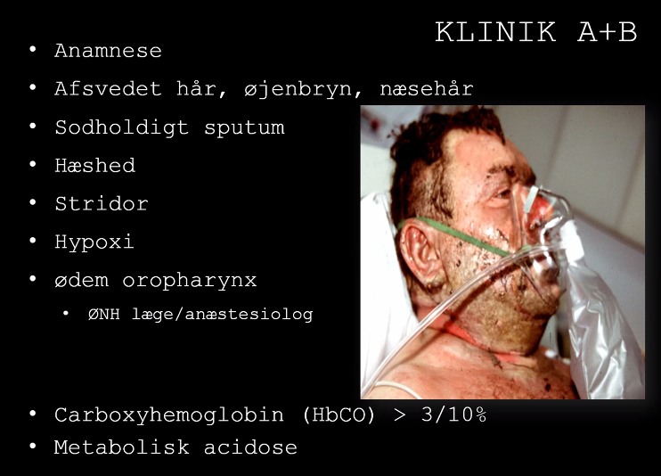
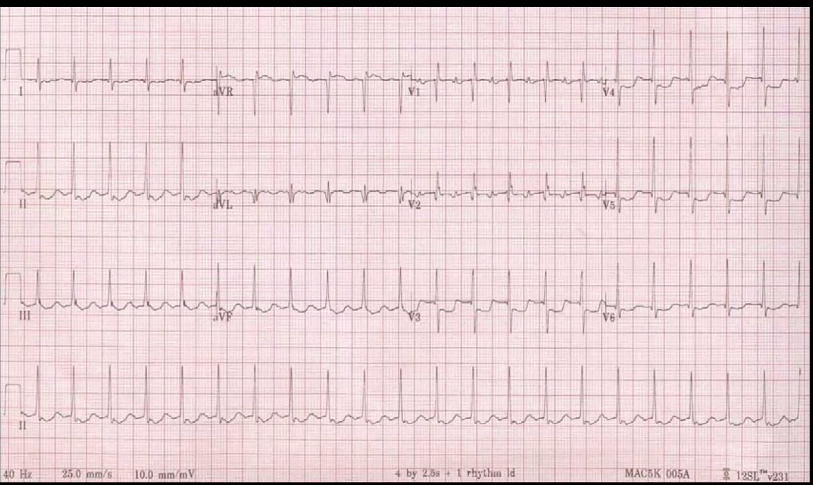
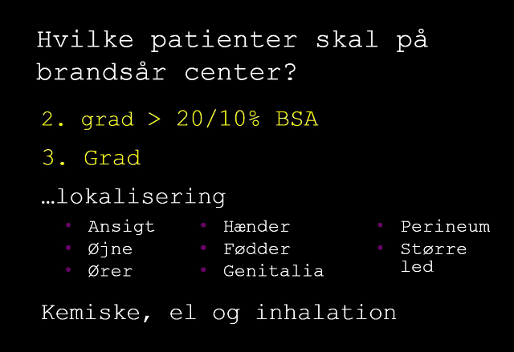
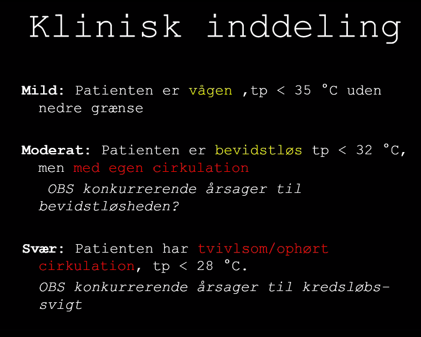
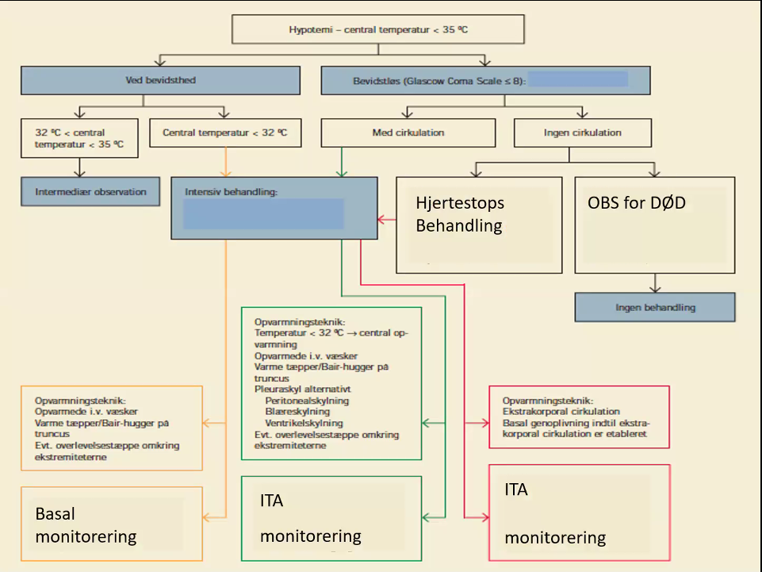
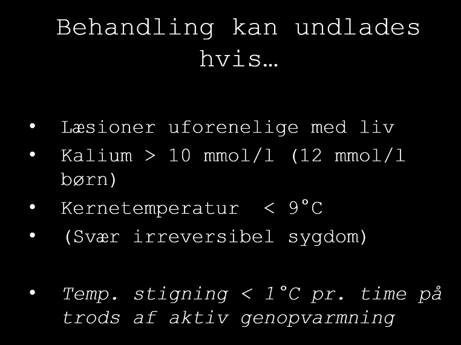
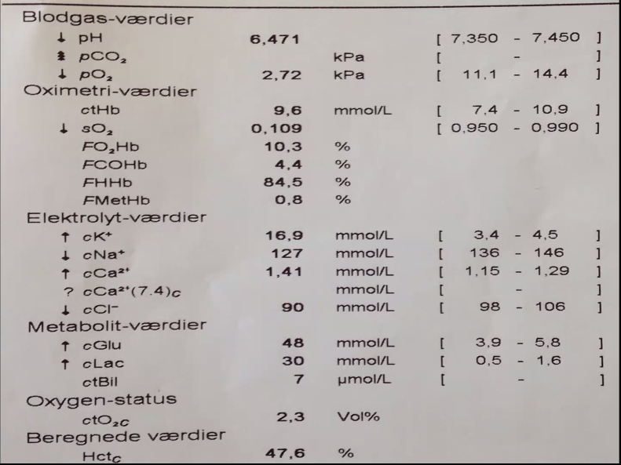
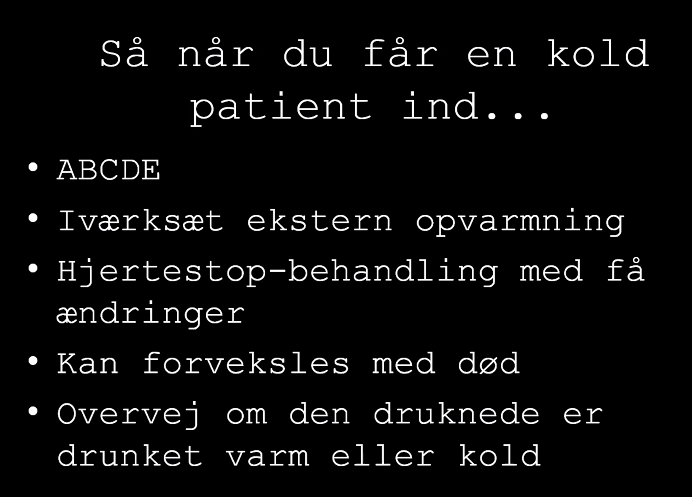

Kold og varm skade
- Varm skade
- Brandsår er sjove.
kedelige tal
I Danmark søger ca. 12.000 lægebehandling for forbrændinger hvert år.
Der omkommer i gennemsnit ca. 80 personer om året ved brandulykker i Danmark.
Der behandles mange flere i hjemmet uden involvering af sundhedspersonale.
Antallet af svært forbrændte patienter er svagt dalende og antallet af skadestuebesøg er faldet med ca. 10 % i perioden 1998-2005.
Ca. 300 indlægges på sygehus hvert år < 175 indlægges på brandsårsafdelingen på Rigshospitalet og 75 på Plastikkirurgisk afdeling Odense Universitets Hospital
Hvad er vigtigt ved modtagelse af brandsårspatienten?
ABCDE de andre svar er ikke nødvendigvis forkerte de skal have meget væske der skal skylles
Hvad kan I når dagen er omme?
- De første 5 bogstaver i alfabetet
- Vurderer et brandsår i forhold til:
- Udseende
- Størrelse
- ”Farlighed”
- Hvornår skal jeg have hjælp?
- Det er svært - RING.
Case 1
- MELDING:
- Mand reddet ud af brændende lejlighed.
- Vågen.
- Ankomst om 3 min.
- Breakout
- Hvor skal pt modtages?
- Som traumepatient.
- Skal behandles som traume før brandsår, hvis traume.
- Brandsårstue hvis muligt
- Så varmt så muligt(?)
- Skylles.
- Som traumepatient.
- Hvem skal være til stede?
- Anæstesi, A-problem pga ødematøse, intubationsberedskab
- Sygeplejeske, hjælp
- Kirurg,
- Hvad skal være tilstede? *
- Hvad forventer I af særlige udfordringer?
- Pt kan blive hypotermi, så varmt rum.
- Har I de oplysninger I vil have?
- Hvad er brændt, cyanid gas?
- Yderligere anamnese
- Bevidstløs?
- Traume?
- Klinik - hvad er der foregået.
- Høj termisk energi.
- => indvortes ødemer (mund og hals?)
- Termisk skade i ansit. * *
- Høj termisk energi.
- Hvor skal pt modtages?
- 54-årig mand reddes ud fra en brændende og røgfyldt bygning
- Pt. er beruset faldt i søvn under rygning i seng
- Ild i sengen og kraftig røg i lejlighed
- Han er vågen, agitateret og hoster voldsomt med sodholdigt opspyt
Cyanid forgiftning
Afbrænding af nye møbler. Aparte opførsel..
ABCDE-gennemgang.
A Airway
- Inhalationsskde
- Øget mortalitet!
- Spørg patienten og hvis de svarer, så nogenlunde fri.
- Hvis de er hæse => ødem
- Så skal man være bekymrede
- Hvis de er hæse => ødem
- Ved forbrænding i ansigt
- TRUET LUFTVEJ, det hæver sikkert op i løbet af kort tid.
B - Breathing
- SAT 100% på 15 L O2
- CO forgiftning!
- Hoster
- Har sod i luftveje
- Egalt luftskigte, en del rallen bilat.
- Pneumoni iforvejen?
- Ikke vigtigt i akutte fase..
- A-gas er godt
- pH 7.17
- pCO2 6.51 kPa
- pO2 8.6 kPa
- f02Hb 0.73
- fCOHb 0.27
- Laktat 9.5 mM
- BE -7.5 mM
- BS 8.5 mM
- Fortolknning
- Kombineret respiratorisk og metabolisk acidose
- primært metabolisk
- laktat
- fCOHb høj (27%)
- 3% er okay hos normale
- 10% kan godt ses hos rygere.
- 25% => trykkammer. [TODO: 18-06-2020 14:42 hvornår skulle RH trykkammer indover]
- Let forhøjet pCO2.
- CO kan ikke ses på SAT-måler
- Cyanid-forgiftet?
- CyanoKit: indikation er vedvarende laktat trods O2-behandling
- Halveringstid på CO:
- Så kan man regne tilbage.
- Kombineret respiratorisk og metabolisk acidose

- Persistende metabolisk acidose
- Cyanid forgiftning el. HbCO
C - cirkulation
- BT 110/75 p 120
- Påskyndet aktion uden mislyde
- Brandsårspt bliver typisk hypertensive pga katekolaminer
- Ved hypotoni, tænk da anden skade! *
- Ved > 20% forbrænding, endothelskade, generelt tab af væske *
Cirkulation * >15-20 % forbrænding * Kapillær lækage, væskeskift, mikrovaskulære skader, inflammation * Burn shock * Hypovolæmi * Kardiogent * Distributivt * Ødem * Øget mortalitet ved forsinket (>2 timer [TODO: tjek op slide]
- Oprethold orgranper
- Gode indgange
- Væske er svært, skal indlægges på brandsårsafd.
- Monitorering
- KAD til alle der er i væskebehandling
- Parklands modificiret 3 ml x vægt x pct
- er hensigterklæring.
- skal reguleres via timediureser.
- 0,5ml/kg.
- Alt skal sys/sutureres fast: tube, a-kanyler, pvks.
Væskebehandling
- Ringer-laktat
- 3 ml pr kg kropsvægt pr pct forbrændt arel
- Eksempel: 70 kg x 50% x 3 ml = 10500 ml
- første halvdel over 8 timer
- anden del over 16 timer
- Justeres efter timediureser
EKG

- EKG:
- St-depressioner
- 18-06-2020 14:55
D- disability
- Bevæger alle fire extr. frit
- BS 9.5 mM
- Rodende, indtryk at dårlig kontakt
- Forgiftning?
CO-forgiftning
CO forgiftning
- høj affinitet til hæmoglobin
- nedsat O2 kapacitet i blodet
- Vævshypoxi
- CO > 3% (>10% rygere)
- myokardieskade
- neurologiske sequelae
- — akutte + sene
- antidot - O2
Cyanid ofrgit
- inhibering cytochrom oxidase
- vævshypoxi
- metabolisk acidose
- synergi med CO
- antidot
- B12
- CyanoKit
Trykkammer
- Relevant røgskade el. gasfyr.
- HbCO > 25%
- Neurologiske symptomer udover hvp.
- EKG-forandringer
- Ring bagvagt først
- fordi I ringer til en anden bagvagt
E- exposure
- Stop forbrændingsprocessen
- Skyl, skyl, skyl.
- Obs hypotermi
- Hvis intuberet, max 30 min aht hypotermi.
- Den vågne, til de ikke synes det er rart mere.
www.brandsår.dk
Størrelse og dybde af brandsår
- 9% pct reglen
- 1% = pts håndflade
- hvis brandsår sidder på genitalier eller led el andet kompliceret, så kontakt brandsårs afd tidl.
- børn lidt anderledes
- hoved er større ned UE
- TBSA = total body surface area
1. grads
- Let rødme, og lidt hævelse?
- Den tæller ikke med i overflade areal
- Hverken parkland eller total brandsår.
2. grads
- Bullae, afstødning af epidermis.
- kan opdlees i dyb og overlfadisk, men det er tiden der afgør det
- dette tælles med i overfladeareal.
- lysrøde, hud er fugtig., smertefuldt.
- Man vil se dem an i 14 dage før man ved om de skal opereres.
3. grads
- Stegte områder.
- Mange farver
- Fuldstændig ueftergiveligt.
- subdermalt
- gør ikke så ondt. det gør de faktisk ikke. nerveender er brændt af.
- Omkringliggende områder er 2. gr og 1. gr.
- SKAL SMERTELINDRES med IV-adgang og opoider.
- Morfin og andre gode ting er gode. Man kan give narcanti.
- OP altid nødvendigt.
- Skal konf. plastikkir afd.
Aflastende incisioner
- Snak med Plastikkirurgisk først?
Kemiske brandsår
- Basiske stoffer er lort
Hvilket stof Skylning med vand
ide Kool EF e she sn ra skylning
Kontakt brandsårcenter
Skyl, skyl skyl...
Elektriske forbrændinger.
- Dybe skader
- Compartment syndrom
- Myoglobinuri
- Rhabdomyolyse
- Væske
Overflytning af brandsår - hvilke skal på brandsårscenter?

KOLD SKADE START
18-06-2020 15:26
Hypotermi
- Symptomer, tilstande,
- Pas på/Uføre/StPS: Hvornår kan man erklære kolde msk døde?
Case 1
- kl 0756 i januar:
- Melding: Ældre mand. Fundet i park i klædt morgenkåbe og sutter. Bevidstløs.
- Trækker vejret
- Anamnese: hvad ved vi om ham?
- Hvorfor ligger en ældre mand i en park i morgensutter?
- A: Fri
- B: RF 6, egalt luftskifte, rallen hø. side, SAT umålelig.
- C: 85/45, p. 25/min, skop med SR
- D: Reagerer lidt på smertestimuli, BS 3.4 mM
- E: Kold, bleg, ingen tegn til traume
- Temp? 31 gr?
- Blære el. rektalt.?
- Accidentel hypotermi
- utilsigt fald i kernetemp til udner 35 gr.
- Mild: <35
- Moderat til 32
- < 28 svær

Et kontinium
- Hyppigt
- Mænd
- Akutte intoks
- sprug og narko
- Ældre særlig udsat
- Ca 85 indl årligt
- 15-20 årlige dødsfald.
Behandling
- Opvarming på en ene eller anden måde
- Varmetæpper
- Varmevæsker
- langt regnestykke: der skal mange liter væske til.
- Så kommer der crazy busy slide



- Lav pH
- K+ > 10 mM
- Kan den være i live?
- Pågående hjertemassage?!
- den pt er død.
- skade uforenelig med liv.
- nu stopper vi lige en gang
ECMO snak
Drukning
- drukning lig kvælning lig hypoxi lig hjertestop
- obs i komb. med nedkøling
- hypotermi el. hypoxi først medførende hjertestop?
- [TODO: og er det vigtigt?]
- hypotermi el. hypoxi først medførende hjertestop?
- Børn er gode til at drukne.
- I MED BØRN HAR ANSVAR!
- swimmingpools, badekar whatever
- Voksne drukner i åbent vand.
- dykning eller alkohol
- DRUKNING = KVÆLNING
- vandet skal være koldt hvis man vil gøre noget
- Mange får AMI når de er ude og svømme.
- obs på dette?
Hvis man overlever
- Vand i alveoler
- surfaktant dysfunktion
- Alveolære kapillæremembran dysfunktion
- Øget permeabilitet
- Vand i plasma og elektrolytderangement
- Lungeødem/ARDS *
Take home KOLD 
- DAN: Kan man varme for hurtigt op?
- Nej, det skal man ikke bekymrer sig om umiddelbart